Hàng 2b · Bảng hàng thẻ điện thoại · Cổng Phạm vi, trình lại sau bốn ý của anh · ảnh chính ở khổ 360, nền sáng, đã đăng nhập, cùng 60 căn mẫu
Bảng hàng trên điện thoại: danh sách thẻ ngang gọn
Kết luận. Thẻ đổi sang dáng ngang của product-grid-4 (ảnh vuông trái, chữ phải), bỏ khung lồng, gom nút vào một hàng. Màn đầu ở 360 thấy 7 căn (trước: 2), ở 414 thấy 8 căn. Còn bốn câu: căn chưa có ảnh trông thế nào, lọc ở đâu, bộ nút theo vai đặt ở đâu, ghim cột «Căn» làm ở đâu.
Anh nói — đã đổi gì
| Ý của anh | Đã đổi |
|---|---|
| 1. Bộ nút chưa tối ưu cho điện thoại | Nút theo vai (Thêm căn, Sửa, Xoá căn): câu 3 dưới đây. Nút của danh sách: Một hàng duy nhất, dính dưới thanh trên khi cuộn: «60 dòng» bên trái; bên phải ba nút biểu tượng 44 px — Lọc (có số ô đang lọc), Nhóm theo Toà, «…» (chứa Lưu góc nhìn). Bỏ ở điện thoại: «Cột» (thẻ không có cột), «Toàn màn hình» (điện thoại đã là toàn màn). Lọc đang chạy hiện thành chip «Trạng thái ×» và «Xoá lọc». |
| 2. Xem được nhiều căn | Mỗi căn cao 86 px (trước 230 px): 7 căn trọn ở màn đầu 360 (trước 2), 8 căn ở 414; khi đang lọc còn 6 căn vì thêm hàng chip. |
| 3. Tận dụng không gian | Dưới 768 bỏ hết khung quanh danh sách (trước: ba lớp) và tiêu đề khung «Hàng» trùng tiêu đề trang; danh sách dùng trọn 360 px bề ngang, các căn ngăn bằng vạch mảnh. |
| 4. product-grid-4 đưa vào chưa đúng, có ảnh / không ảnh | Thẻ theo đúng dáng khối: ô ảnh vuông bên trái, mã căn + giá chung một dòng, nơi + trạng thái dòng hai, diện tích · phòng ngủ dòng ba. Căn có ảnh hiện ảnh; căn chưa có ảnh là câu 1 dưới đây. Ảnh căn thật đến ở hàng 15 (tải ảnh lên hồ sơ căn); ảnh trong trang này là ảnh minh hoạ cho một phần ba số căn, để thấy hai ca cạnh nhau. |
Trước và sau ở 360

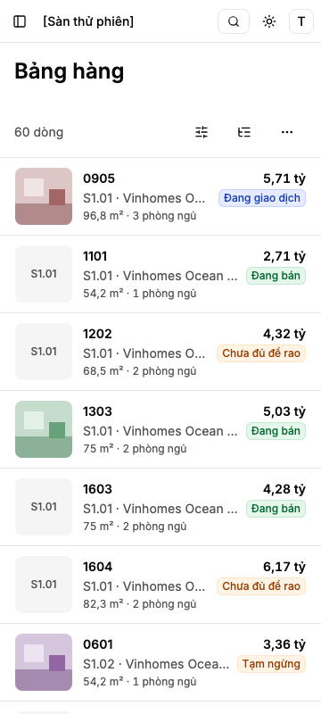
Tham chiếu trong kho — cùng một thẻ căn ở hai chỗ
Thẻ ở danh sách là chính thẻ căn đang có ở đầu hồ sơ (khối của kho, gốc product-grid-4), thêm một dáng «ngang gọn»; không có thẻ thứ hai. Đầu hồ sơ giữ dáng xếp dọc như hôm nay — ảnh bên phải chụp lại sau khi đổi, không khác trước. Khi hàng 15 có ảnh căn thật, cùng một chỗ ảnh ấy dùng cho cả hai dáng.
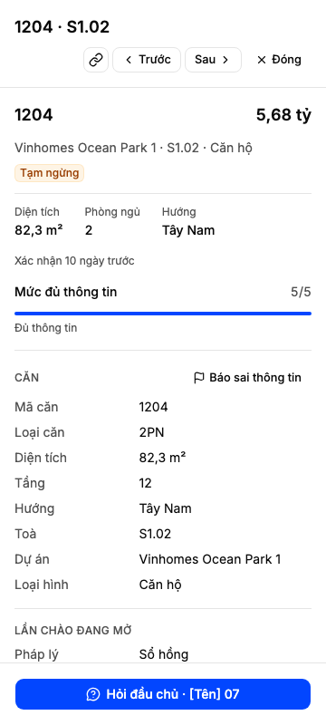
Câu 1 · Căn chưa có ảnh trông thế nào?
Khuyến nghị: Ô — giữ ô vuông, ghi mã toà trên nền xám nhạt. Vì sao: mọi dòng thẳng hàng dù có ảnh hay không, mắt lướt theo toà được; khi hàng 15 có ảnh thật, bố cục không đổi.
Lối khác: Gọn — căn chưa có ảnh bỏ ô, chữ dồn sang trái.
Ô · giữ ô vuông, ghi mã toà
Được: dòng nào cũng một dáng, tìm theo toà nhanh bằng mắt. Mất: căn chưa có ảnh vẫn tốn ô 64 px; tên dự án bị cắt sớm hơn.
Gọn · bỏ ô khi chưa có ảnh
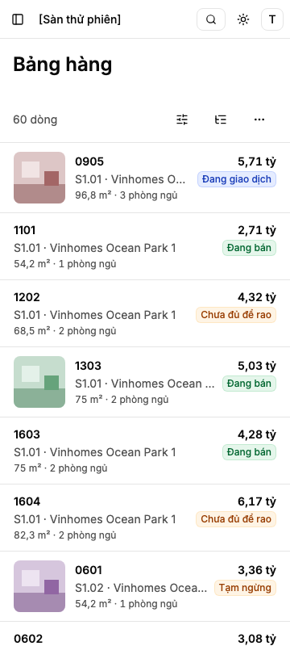
Được: căn chưa có ảnh đọc trọn tên dự án, dòng thấp hơn chút. Mất: hai dáng dòng xen nhau (có ảnh thụt vào, không ảnh sát lề), mắt khó lướt; cùng số căn mỗi màn.
Khối gốc ReUI product-grid-4 (chụp trước khi dựng). Giữ: ảnh vuông trái, dòng tên + giá, hàng thông số. Bỏ: câu chuyện, tim, dải đầu chương thành dòng nhóm toà.

Cùng hai lối ở 414, và hôm nay khi chưa căn nào có ảnh
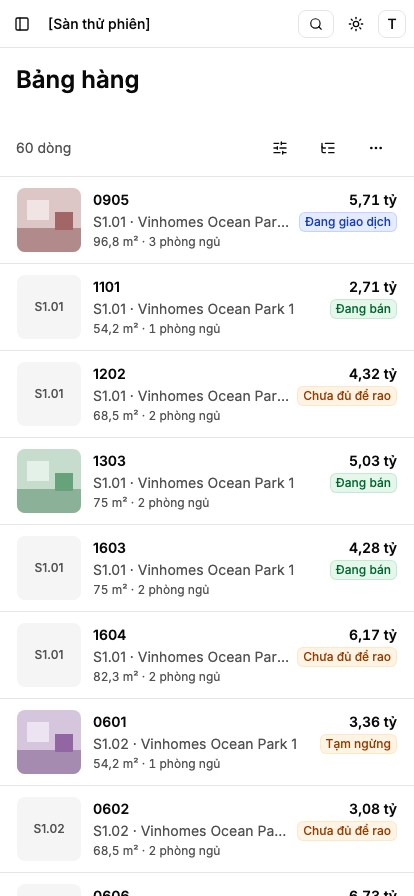
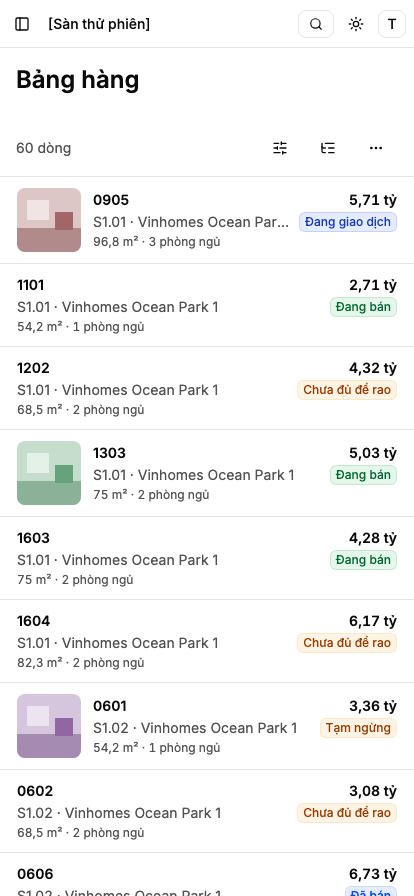
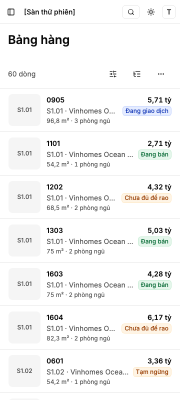
Câu 1: Ô
Câu 2 · Lọc trên điện thoại nằm ở đâu?
Khuyến nghị: Nút — nút Lọc trên hàng công cụ mở ngăn đáy đủ tám ô; lọc đang chạy hiện thành chip. Vì sao: trả lời ý 1 và 3 của anh — không mất một hàng ô cố định, vẫn thấy rõ đang lọc gì. Chọn lối này là đổi luật «ô lọc luôn hiện» của hàng 2e riêng cho điện thoại (từ 768 vẫn giữ).
Lối khác: Hàng ô — hàng ô lọc luôn hiện dưới hàng công cụ, cuộn ngang (giữ nguyên luật 2e).
Cả ba ảnh: đang lọc Trạng thái «Đang bán» (24/60 căn).
Nút · ngăn đáy + chip
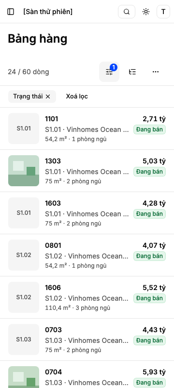
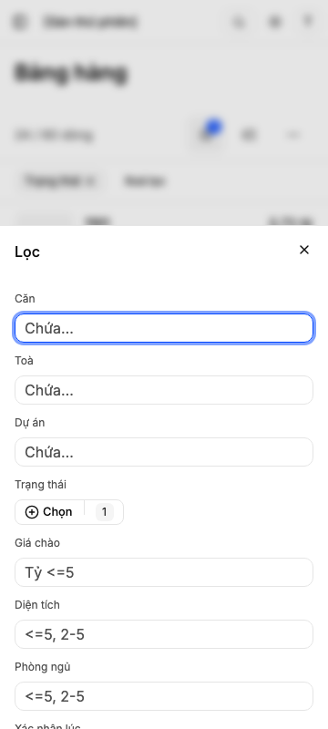
Được: thấy ngay lọc nào đang chạy (chip), bỏ một lọc một chạm; thấy đủ tám ô khi mở ngăn. Mất: thêm một chạm mỗi lần gõ lọc; khác bảng máy tính.
Khối gốc ReUI filter-sidebar-5 (chụp trước khi dựng; dựng bằng ngăn đáy của kho, chip lọc giữ, bỏ màu, cỡ, thanh trượt):

Hàng ô · luôn hiện
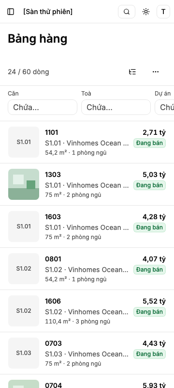
Được: gõ lọc ngay, giống bảng. Mất: chỉ thấy hai ô đầu (Căn, Toà); lọc đang chạy ở cột khuất (Trạng thái) không thấy nếu không cuộn ngang; hàng ô chiếm chỗ cả khi không lọc.
Câu 2: Nút
Câu 3 · Bộ nút theo vai (thêm, sửa, xoá căn) nằm ở đâu trên điện thoại?
Hôm nay: trên Bảng hàng, kể cả ở máy tính, chưa có nút Thêm căn hay Xoá căn — bảng quyền ghi chúng là «dự kiến»: Thêm căn là hàng 12, gỡ căn là hàng 18b, sửa nhanh trên điện thoại là hàng 3d. Hàng này đặt sẵn chỗ và dáng theo khuôn bộ nút 9e (nút thêm ở đầu màn, «…» của từng căn), để các hàng ấy cắm vào. Nút hiện theo vai: Đầu chủ có Sửa, Xoá căn của mình; Đầu khách chỉ Sửa; Trưởng nhóm cả sàn; Quản trị sàn không đọc Bảng hàng.
Khuyến nghị: «…» trên mỗi thẻ, như dòng của bảng — và đầu hồ sơ cũng có cùng «…» (khuôn 9e). Vì sao: giống bảng máy tính, một chạm tới việc của căn mà không phải mở hồ sơ; vẫn 7 căn mỗi màn. Lối khác: chỉ ở đầu hồ sơ — thẻ chỉ là một nút mở, việc nằm ở hồ sơ.
«…» trên thẻ (và ở đầu hồ sơ)
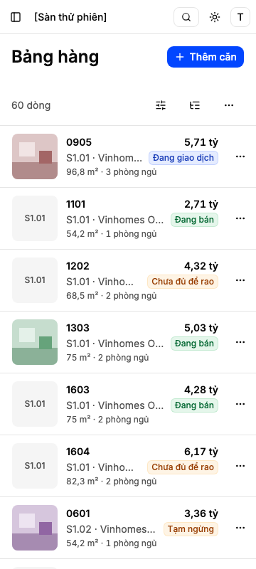
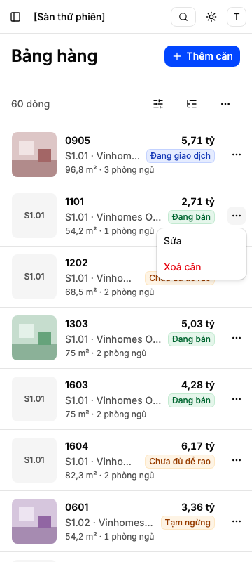
Được: một chạm tới việc của căn, giống bảng. Mất: chữ của thẻ hẹp thêm 44 px (tên dự án cắt sớm hơn); dễ chạm nhầm «…» khi định mở căn.
Chỉ ở đầu hồ sơ
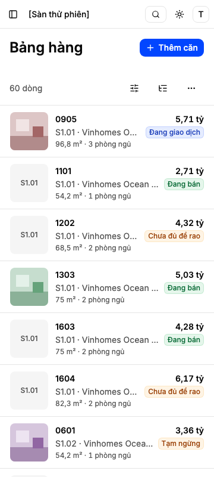
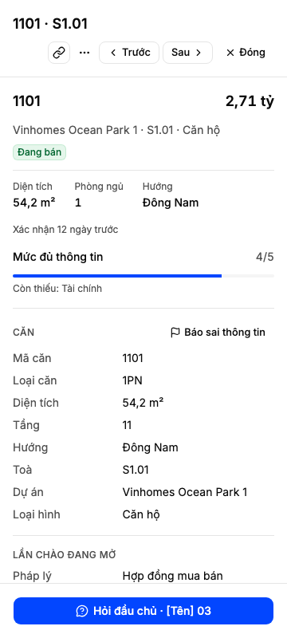
Được: thẻ rộng chữ hơn, không chạm nhầm. Mất: thêm một chạm (mở hồ sơ) cho mọi việc trên căn; khác bảng máy tính.
Câu 3: «…» trên thẻ
Câu 4 · Khoá ghim cột «Căn» ở menu tiêu đề cột — làm ở đâu?
Việc gắn kèm từ hàng 2e, ở bảng máy tính (từ 768), không chạm thẻ điện thoại.
Khuyến nghị: tách thành việc nhỏ riêng, sau khi 2b và 2d đã gộp. Lối khác: làm trong hàng này — một PR, trộn việc bảng máy tính vào hàng điện thoại.
Câu 4: tách
Đã chốt
- Ngưỡng 768. Dưới 768 thẻ, từ 768 bảng như hôm nay — có bài kiểm ở 767 và 768.
- Một vùng Lưới. Lọc, nhóm theo toà, góc nhìn, số dòng, trạng thái tải/trống/lỗi/không quyền là của vùng; xoay máy qua ngưỡng không mất lọc.
- Chạm thẻ mở hồ sơ căn đã có (hàng 3, 3e), toàn màn; lùi về đúng chỗ đang cuộn và đúng thẻ vừa mở. Hàng công cụ dính khi cuộn.
- Không sửa trên thẻ — hàng 3d.
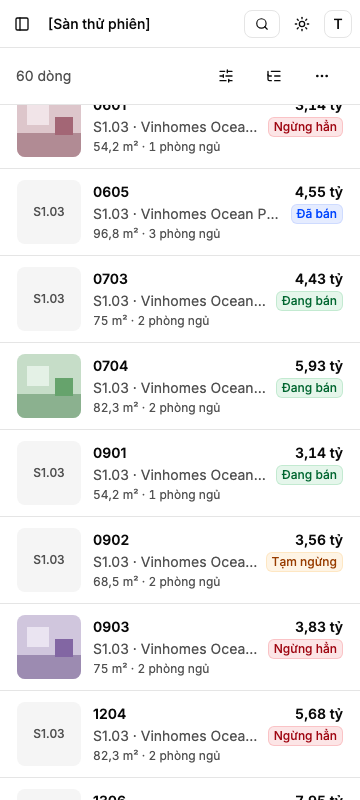
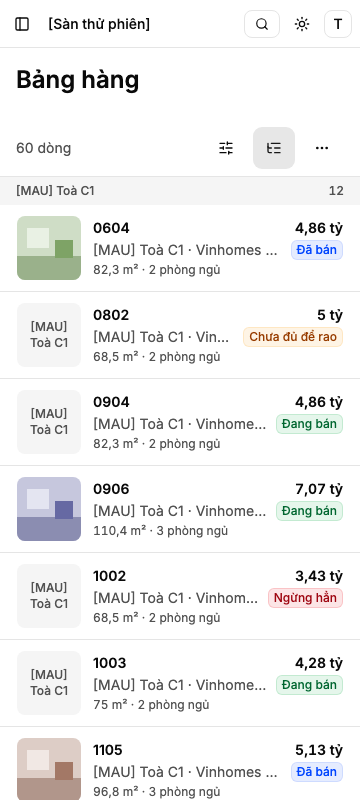
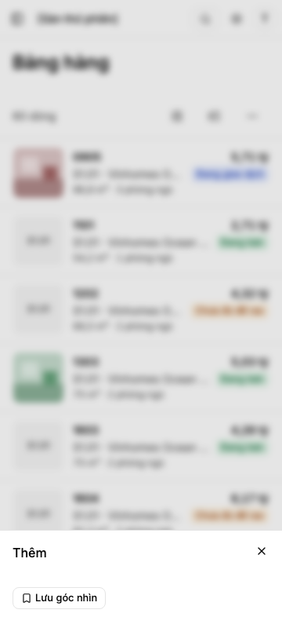
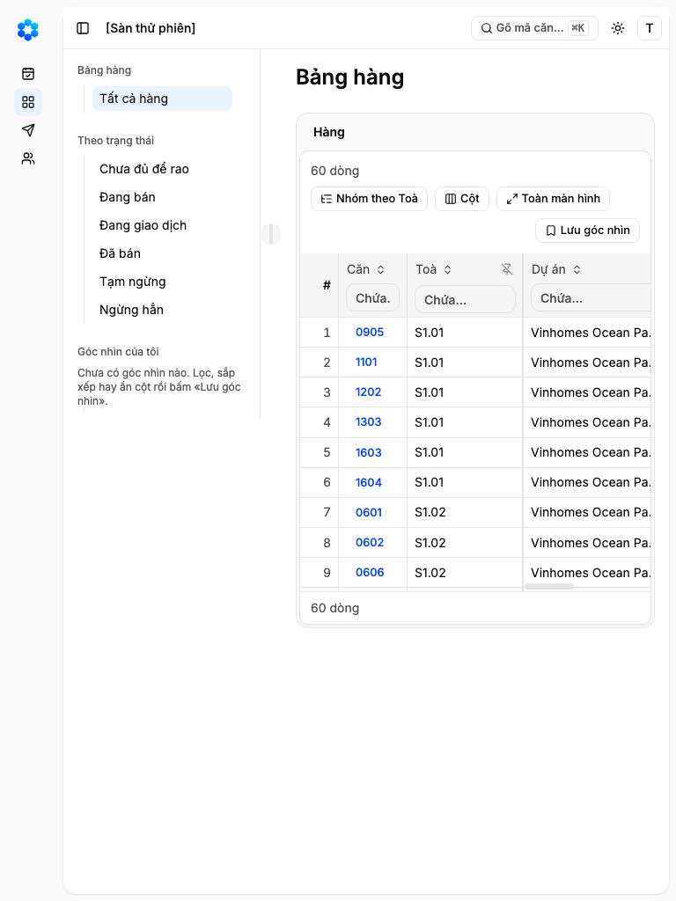
Rủi ro
- Dữ liệu mẫu chỉ có mã căn bốn ký tự, giá 2,71–8,06 tỷ, không căn cho thuê, không căn thiếu giá; ảnh căn là ảnh minh hoạ (hàng 15 chưa có). Mã 14 ký tự, giá 125,5 tỷ, giá thuê, giá trống đo bằng bài kiểm riêng ở 360.
- Phần dựng chạm vùng Lưới dùng chung, cùng chỗ hàng 2d sửa: giám sát xếp thứ tự gộp trước khi dựng.
Trở ngại công cụ
- Máy chủ ReUI của công cụ báo lỗi đăng nhập; ảnh khối gốc chụp từ trang xem trước công khai của ReUI. Không ảnh hưởng lời khuyên.
Trả lời
Câu 1: Ô · Câu 2: Nút · Câu 3: «…» trên thẻ · Câu 4: tách · hay sửa: ___